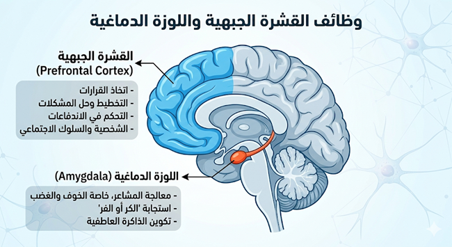
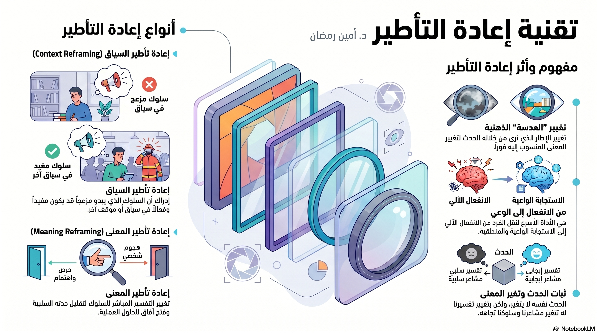
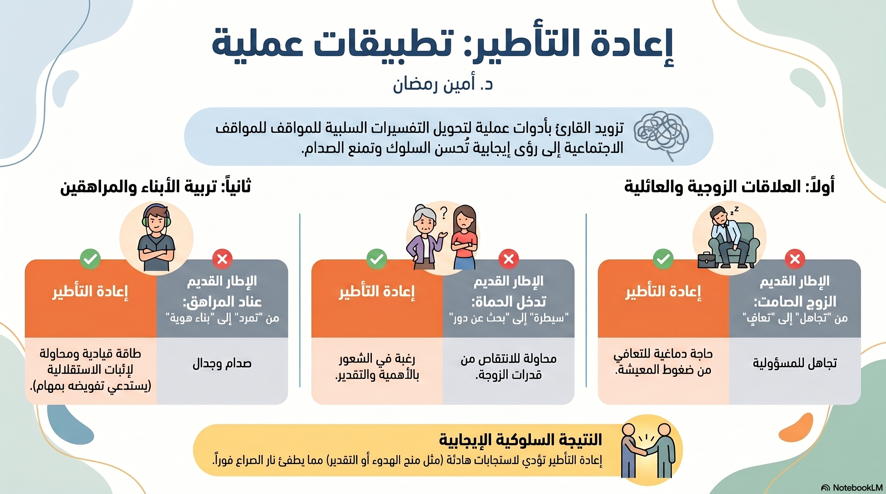

اللقاء الأول: بوصلة الأسرة
فك شفرة الذات وإدارة الضغوط
أولاً: تشريح الضغط النفسي (الاستحواذ اللوزي)
عندما تشعر اللوزة الدماغية (Amygdala) بالتهديد (مثل الأزمات المالية)، تطلق هرمونات الكورتيزول والأدرينالين، مما يعطل القشرة الجبهية (العقل المنطقي) ويدخلك في حالة "الكر أو الفر".

مراحل استجابة الدماغ للضغط النفسي وكيفية العودة للعقل الراشد:

ثانياً: أنماط التفكير تحت الضغط (بوصلة هيرمان HBDI)

- التحليلي (أزرق): يتحول لآلة حاسبة جافة، يركز على الأرقام ويتجاهل المشاعر.
- التنفيذي (أخضر): هوس بالسيطرة والروتين، يتوتر من أي فوضى.
- العاطفي (أحمر): حساسية مفرطة، لعب دور الضحية، استدعاء التضحيات.
- الإبداعي (أصفر): انسحاب وهروب، أو اقتراح حلول غير واقعية.

أمثلة وحالات من الواقع لتطبيق النموذج لتجنب الشخصنة:

ثالثاً: تقنية إعادة التأطير (Reframing)
أداة لتغيير "العدسة" التي نرى بها المواقف لتقليل حدتها الانفعالية. الحدث لا يتغير، لكن المعنى يتغير.

تطبيقات إعادة التأطير على (الزوج الصامت، عناد المراهق، وتدخل الحماة):

🎯 اكتشف نمطك المهيمن تحت الضغط
أجب عن الـ 20 سؤالاً التالياً بناءً على ما تفعله فعلياً وقت الغضب.
السؤال 1 / 20
📝 التقييم الذاتي للقاء الأول
اختبر استيعابك للمفاهيم العلمية التي تم طرحها في هذا اللقاء.